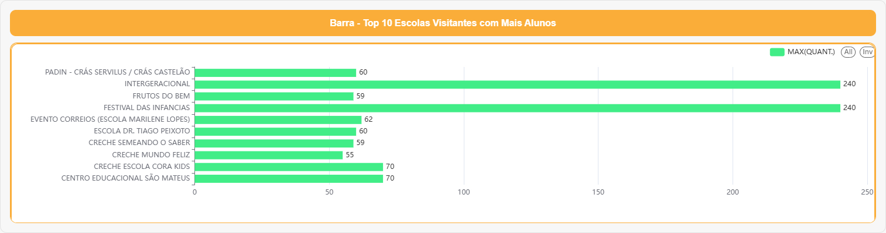
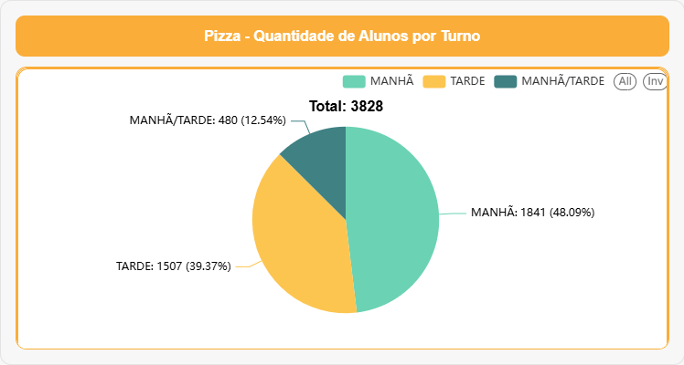
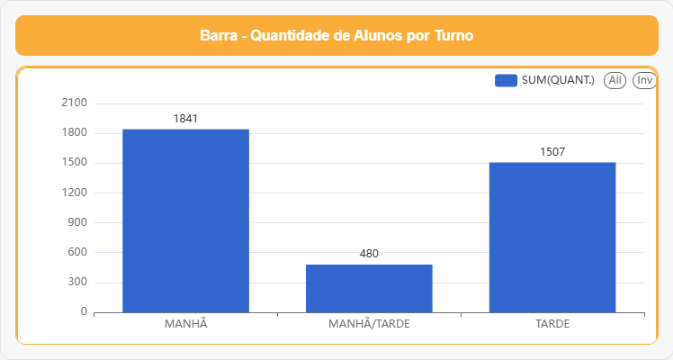
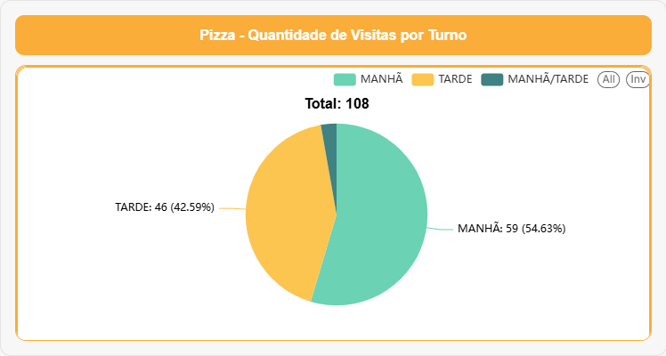
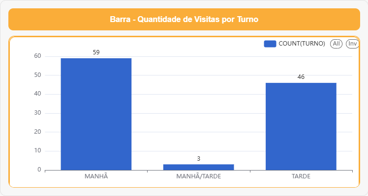
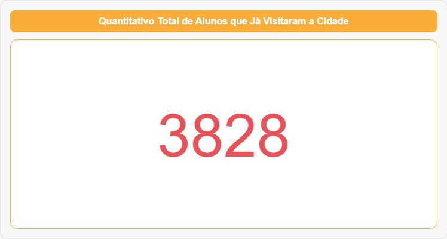
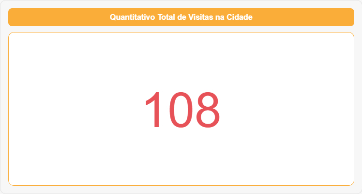
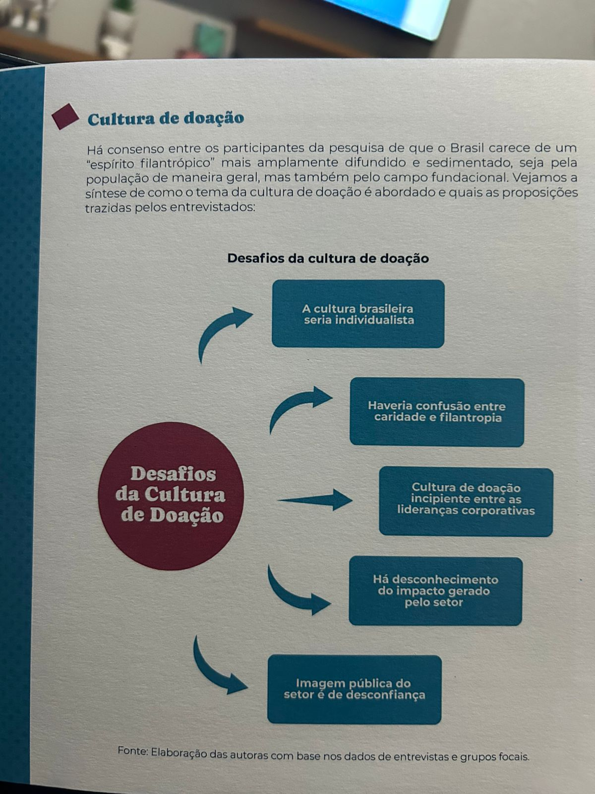

📊 Dashboard – Visitas à Cidade da Criança (Página 1)
Promover o monitoramento, a análise e a disseminação de dados e informações estratégicas sobre a Primeira Infância de Fortaleza e a Cidade Das crianças, com foco na promoção de políticas públicas integradas, baseadas em evidências, que assegurem os direitos das crianças de 0 a 6 anos e o fortalecimento dos vínculos familiares e comunitários.
Dados sobre as Visitas na Cidade das Crianças Só entre os dias 02/09/2025 e 28/11/2025:
Barra – Visitantes por Dia e por Turno

Histórico de visitantes com gráfico de Linha
Histórico de visitantes com gráfico de Barra
Top 10 Escolas Visitantes com Mais Alunos

Quantidade de Alunos por Turno
Quantidade de Alunos por Turno
Quantidade de Visitas por Turno
Quantidade de Visitas por Turno
Quantitativo Total de Alunos que Já Visitaram a Cidade
Quantitativo Total de Visitas na Cidade


Impacto da Política Pública: Cidade da Criança
(Período: Setembro, Outubro e Novembro)
A Cidade da Criança consolida-se como política pública estruturante de primeira infância, promovendo acesso à natureza, à cultura, à ludicidade e a experiências pedagógicas qualificadas.
Os indicadores referentes ao circuito interativo, no período de três meses, evidenciam alcance, equidade e capilaridade das ações.
1. Alcance Educacional e Territorial
Foram 108 escolas atendidas em três meses, contemplando unidades municipais, estaduais, privadas e instituições parceiras.
O número expressivo de escolas demonstra:
- Alta capilaridade territorial, atingindo diferentes bairros e realidades socioeconômicas.
- Integração intersetorial entre educação, cultura, primeira infância e assistência.
- Reconhecimento das escolas sobre o valor pedagógico da experiência no parque.
Este dado, por si só, posiciona a Cidade da Criança como equipamento estratégico da política de educação integral.
2. Impacto Direto nas Crianças
Foram 3.828 crianças atendidas nos circuitos interativos.
Esse volume revela:
- Uso intenso, contínuo e qualificado dos espaços de brincar livre e de aprendizagem.
- Alta adesão de professores e escolas aos circuitos sensoriais, motores, culturais e narrativos.
As experiências ofertadas contribuem diretamente para:
- Desenvolvimento da coordenação motora ampla e fina;
- Autonomia e exploração do espaço;
- Imaginação, linguagem e narrativa;
- Fortalecimento de laços afetivos e de convivência;
- Regulação emocional a partir da natureza, do corpo em movimento e do brincar.
Isso mostra que a Cidade da Criança é mais que um parque: é uma plataforma pública de desenvolvimento infantil.
3. Contribuição para as Políticas de Primeira Infância
Os indicadores reforçam a Cidade da Criança como referência nacional em:
✔ Educação integral e baseada na natureza
- Brincar ao ar livre;
- Experiências sensoriais e culturais;
- Ambientes vivos, acolhedores e seguros.
✔ Intersetorialidade real
- Atuação integrada de CESPI, Gabinete da Primeira-Dama, SME, URBFOR, SEUMA, SDE, SEINFRA, Fecomércio, ENEL, SESC, entre outras instituições, articuladas em torno de um propósito comum: a primeira infância.
✔ Redução das desigualdades
- Equipamento gratuito, central e acessível, que oferece experiências de alta qualidade, comparáveis às das escolas mais estruturadas da cidade.
- Amplia o acesso de crianças de territórios vulnerabilizados a vivências culturais, pedagógicas e de lazer qualificadas.
✔ Política pública viva e cotidiana
- Não se configura como evento pontual, e sim como espaço ativo e contínuo, recomendado pelas escolas e com fluxo crescente de visitas.
colocar os 4 pontos na forma abaixo:

4. Legado Mensurável da Cidade da Criança
Os números demonstram:
- Alta procura e impacto amplo em apenas três meses;
- Confiança das redes de ensino na proposta pedagógica e na segurança do equipamento.
Trata-se de um equipamento que:
- Forma cultura de infância em Fortaleza;
- Aproxima famílias e professores em torno do direito de brincar;
- Promove saúde emocional e vínculo com a natureza;
- Gera pertencimento e memória afetiva nas crianças, famílias e profissionais.
A Cidade da Criança já se evidencia como uma política pública de referência, sustentada por dados, experiência concreta e repercussão social.
Síntese Institucional para Relatórios
“Com 3.828 crianças vivenciando os circuitos interativos e 108 escolas atendidas em apenas três meses, a Cidade da Criança reafirma seu papel como política pública estruturante da primeira infância em Fortaleza.
O equipamento garante acesso democrático ao brincar, à natureza, à cultura e às experiências pedagógicas de alta qualidade, fortalecendo vínculos, aprendizagens e o desenvolvimento integral das crianças.”